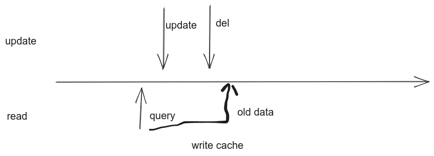
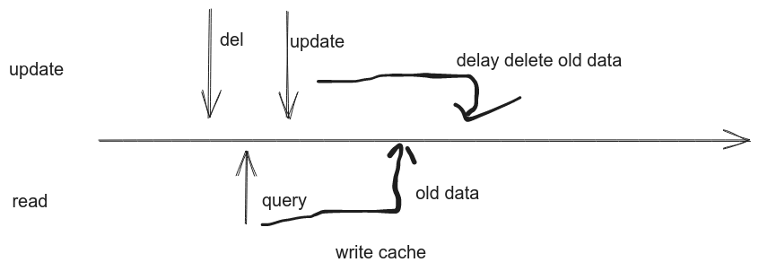

缓存在业务实践

文章目录
先更新db还是先更新缓存
- 先删除缓存 ，再更新db
- 先更新db，再删除缓存
- 旧值，脏数据问题 (可能会读到缓存旧值，只能保证最终一致性)
- 删除缓存，更新db,延迟删除缓存 (双删除策略)
先删除缓存， 多线程访问的情况下，会有数据不一致性


仅仅进行一次删除缓存的操作可能并不足够。因为在多线程或高并发的环境下，可能会出现这样的问题：一个线程更新了数据库并删除了缓存，但在它删除缓存之前，另一个线程已经读取了旧的缓存数据。如果这个线程在第一个线程删除缓存之后才更新缓存，那么就会导致缓存中的数据仍然是旧的、不一致的。
需要注意的是，双删除缓存策略并不能完全解决所有并发问题。在某些极端情况下，仍然可能会出现数据不一致的情况。因此，在设计和实现分布式系统时，还需要结合其他技术手段（如分布式锁、消息队列等）来进一步提高数据的一致性和可靠性。
这种双删除缓存策略的区别在于它提高了数据一致性的保障程度。通过两次删除缓存的操作，它降低了在并发环境下出现数据不一致的风险。当然，这也带来了一定的性能开销，因为每次更新数据库都需要执行两次删除缓存的操作。但是，在需要保证数据一致性的场景中，这种开销通常是值得的。
文章作者 lyr
上次更新 2024-03-10